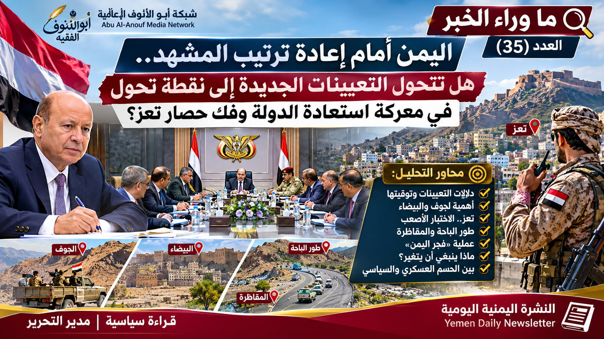

صورة أرشيفية – اللجنة الدولية للصليب الأحمر، تصوير خالد الثور. ليست من أحداث نوفمبر 2026.
رحلة البحث عن الماء
توضح الصورة جانباً من صعوبة الوصول إلى المياه في المناطق المتضررة من ضعف خدمات المياه والصرف الصحي.

تعز ليست مدينة عابرة في جغرافيا اليمن، ولا مجرد جبهة في خريطة الحرب؛ إنها مدينة التاريخ والمدنية والتعليم والثقافة، وموطن الإنسان الذي ظل متمسكاً بالحياة والكرامة رغم سنوات الحصار وتراكم المحن.
ومن هنا، فإن ما تعيشه تعز اليوم لم يعد يحتمل مزيداً من الانتظار، ولا تكفي معه القرارات الإدارية وحدها، مهما كانت أهميتها. فتعيين مشرف على جبهة تعز، أو إعادة تنظيم المسؤوليات، لا يمثل استجابة كافية لحالة إنسانية ومعيشية تجاوزت حدود الاحتمال. ما تحتاجه المدينة هو تحرك عاجل وجاد من الحكومة الشرعية والتحالف العربي، يضع إنهاء الحصار ورفع المعاناة عن السكان في مقدمة الأولويات.
لقد كشفت التحذيرات الأممية الأخيرة عن جانب من حجم الكارثة الإنسانية؛ فصندوق الأمم المتحدة للسكان حذّر في 3 نوفمبر من أن أكثر من 13 ألف امرأة حامل يفتقرن إلى الرعاية الصحية الأساسية، وأن خمسة مرافق فقط من أصل 27 مرفقاً للطوارئ الخاصة بالأمومة والمواليد تعمل جزئياً. كما تحدثت الأمم المتحدة عن تعطل وصول الغذاء والإمدادات الأساسية وتراجع إنتاج المياه.
وهذه ليست أرقاماً عابرة في تقرير دولي، بل وجوه بشرية وأسر وأطفال ومرضى، لهم الحق في الحياة والرعاية والأمان. إن تعز لا تطلب امتيازاً، ولا تستجدي إحساناً؛ إنها تطالب بحق أصيل، وبواجب تتحمله الدولة تجاه مواطنيها.
ومن واجب الحكومة الشرعية أن تنتقل من إدارة الأزمة إلى معالجة أسبابها، وأن تستخدم الوسائل السياسية والدبلوماسية والإنسانية المشروعة والمتاحة لفتح الطرق، وتأمين وصول الغذاء والدواء والوقود، وحماية المدنيين، ووضع خطة عاجلة تعيد للمدينة قدرتها على الحياة والحركة والتعافي.
كما أن مسؤولية الأشقاء في التحالف العربي، وفي مقدمتهم المملكة العربية السعودية، تقتضي موقفاً يتناسب مع حجم المأساة ومكانة تعز. فالأخوة والمصير المشترك والواجب الديني والوطني والأخلاقي تستدعي تسخير الإمكانات والنفوذ والقدرات السياسية والإنسانية لدعم إنهاء الحصار ورفع الضرر عن المدينة وسكانها، وفق ما تقتضيه المسؤولية والوسائل المشروعة.
إن تعز، بما تمثله من قيمة وطنية ومدنية وتاريخية، لا يجوز أن تبقى موضوعاً للتفرج أو مادة للمناشدات المتكررة. فالصمود الذي قدمه أبناؤها يستحق الوفاء، والتضحيات التي بذلوها تستحق استجابة توازيها. وليس من الإنصاف أن يُطلب من الناس مزيد من الصبر بينما تتأخر المعالجات التي تقع مسؤوليتها على عاتق مؤسسات الدولة وحلفائها.
إن معيار جدية أي تحول سياسي أو إداري لا يقاس بعدد القرارات الصادرة، بل بقدرته على تغيير واقع الناس. تعز اليوم ترفع نداءها، وليس من حق أحد أن يصم أذنيه عنه. إنها تستحق الاستجابة، لا مزيداً من الوعود؛ وتستحق موقفاً يترجم المسؤولية إلى خطوات عملية.
فك الحصار عن تعز ليس مطلب مدينة وحدها، بل واجب وطني وإنساني، واختبار لضمير الدولة، وصدق الالتزام تجاه الإنسان اليمني.
تتداخل في هذا الملف التطورات الميدانية مع المسؤولية السياسية والإنسانية؛ فالمطلوب ليس الاكتفاء بتبديل المواقع أو إعادة توزيع المسؤوليات، بل ترجمة أي تغيير إلى حماية للمدنيين، وتحسين الوصول إلى الخدمات، وخطوات ملموسة لإنهاء معاناة تعز.
وفي ما يتعلق بالمقاطرة، وردت روايتان متباينتان بشأن الوضع في محيط «الخزان الأحمر»: رواية تتحدث عن استعادة الموقع، وأخرى نقلتها تغطية رويترز عن سيطرة الحوثيين. لذلك لا تعتمد النشرة إحدى الروايتين بوصفها حقيقة محسومة، إلى حين توافر تأكيد مستقل ومتقاطع يحدد زمان الواقعة ومكانها.
أما طور الباحة، فتظل متابعتها مرتبطة بما يثبت من بيانات الجهات المعنية والتغطيات الصحفية الموثوقة، مع تجنب تحويل الأخبار المتداولة إلى نتائج ميدانية مؤكدة قبل التحقق.
وتضع النشرة هذه التطورات في سياقها الأوسع: أثرها على حركة المدنيين، ووصول الغذاء والدواء والوقود، وأمن الطرق، ومسؤولية المؤسسات الرسمية في حماية السكان ورفع الحصار عن تعز.
ملاحظة تحريرية: تتضمن المواد المستعادة إشارة إلى اختلاف الروايات بشأن المقاطرة، لكنها لا تتضمن روابط المصدر الأصلية لكل رواية؛ لذلك أبقيناها منسوبة وغير محسومة، ولم نضف تفاصيل ميدانية غير موثقة.
توضح الصورة جانباً من صعوبة الوصول إلى المياه في المناطق المتضررة من ضعف خدمات المياه والصرف الصحي.

صورة توثيقية سابقة لأزمة المياه في تعز. أما الصور الأحدث المنشورة في أكتوبر 2026 فتُراجع لدى الناشر الأصلي.
تحدثت تغطيات إعلامية في مطلع نوفمبر عن استعادة القوات الحكومية مواقع ومرتفعات في محافظة الجوف، بينها مرتفعات حويشيان ومواقع شرق مدينة الحزم. وتُنسب هذه المعلومات إلى التغطيات التي أوردتها، ولا تعني أن النشرة تحققت بصورة مستقلة من جميع تفاصيل السيطرة أو من استمرارها على الأرض.
ترد في المواد المتاحة إشارات إلى استمرار العمليات والتطورات في محافظة مأرب. ولا تتوافر في النصوص المستعادة تفاصيل مستقلة كافية لحسم تغيرات السيطرة الميدانية؛ لذلك تكتفي النشرة بالإشارة إلى استمرار التطورات وفق ما أعلنته المصادر، دون تقديم تقديرات أو تفاصيل غير موثقة.
تقع عقبة ثَرَة على الطريق الرابط بين محافظتي أبين والبيضاء، عبر لودر ومكيراس. وقد عادت إلى واجهة الاهتمام في التقارير المتداولة، لكن المواد المستعادة لا تقدم تأكيداً مستقلاً يحسم آخر وضع ميداني فيها أو يثبت السيطرة على الطريق. وعليه، لا تنسب النشرة أي تقدم أو سيطرة إلى جهة بعينها دون بيان واضح أو تحقق مستقل.
اعتمدت النشرة التسمية الجغرافية الصحيحة: «عقبة ثَرَة»، وليس «قبة الترة». كما لم تُدرج تفاصيل تكتيكية أو تحركات ميدانية غير لازمة للقارئ.
تضمنت المواد التي زودت بها الشبكة حصيلتين مختلفتين للعمليات العسكرية، ولا يجوز جمعهما أو التعامل معهما كأنهما بيان واحد؛ لاختلاف مصدر النقل والأرقام، والحاجة إلى مطابقة التوقيت والفترة التي تغطيها كل حصيلة.
وتشير المواد إلى أن التصريحات تناولت تطورات في الجوف ومأرب والبيضاء، وإزالة ألغام في مواقع مستعادة بالجوف. وتظل هذه الأرقام بيانات منسوبة إلى الجهات التي أعلنتها أو نقلتها، وليست حصيلة تحققت منها الشبكة بصورة مستقلة.
تنبيه مهني: لا تُجمع الحصيلتان حسابياً، ولا يُفترض أنهما تغطيان الفترة الزمنية نفسها. يلزم الرجوع إلى نص كل بيان وتاريخ نشره وساعة صدوره قبل اعتماد مقارنة نهائية.
الأرقام منسوبة إلى الجهات التي أعلنتها، وتخضع للتحديث. لا تمثل هذه الصفحة تحقيقاً مستقلاً في الوقائع الميدانية.
تقرير رويترز عن تحذير صندوق الأمم المتحدة للسكان نداء الأمم المتحدة لفتح الطرق وإيصال المساعدات
أفادت وكالة سبأ، نقلاً عن وزارة الصحة العامة والسكان، بأن استهداف مركز السُّقيَّا الصحي في مديرية المضاربة بمحافظة لحج أسفر، وفق الحصيلة الأولية المعلنة، عن وفاة خمسة أشخاص وإصابة 15 آخرين، بينهم عاملون في القطاع الصحي. وأدانت الوزارة الحادثة وطالبت بالتحقيق ومحاسبة المسؤولين.
كما نُقلت إدانة بريطانية للهجوم والدعوة إلى محاسبة المسؤولين. وتبقى الأرقام والتفاصيل منسوبة إلى الجهات التي أعلنتها، ولا تقدمها الشبكة باعتبارها تحققاً مستقلاً.
المصادر: وكالة سبأ ووزارة الصحة، ومواقف دولية منشورة في 2 و3 نوفمبر 2026. الأرقام منسوبة إلى الجهات المعلنة.

تأتي التعيينات والتغييرات الإدارية والعسكرية في لحظة تتداخل فيها تحديات استعادة مؤسسات الدولة مع الضغوط الإنسانية والخدمية. ويمكن قراءة هذه الخطوة بوصفها محاولة لإعادة ترتيب المسؤوليات وتفعيل الحضور الحكومي، لكن دلالتها النهائية لا تُقاس بالأسماء والقرارات وحدها، بل بقدرتها على تحسين الأداء وتوحيد القرار وتقديم نتائج يشعر بها المواطن.
يحمل اختيار محافظين من أبناء المحافظتين رسالة تتصل بمعرفة الواقع المحلي وبناء الثقة مع المجتمع، والاستفادة من الكفاءات والخبرات المتراكمة. غير أن الانتماء المحلي وحده لا يضمن النجاح؛ فالمعيار هو الكفاءة والنزاهة والقدرة على إدارة المؤسسات وتوسيع المشاركة وتقديم الخدمات لجميع السكان دون تمييز.
تبقى تعز الاختبار الأكثر إلحاحاً؛ فالتحدي لا يقتصر على إعادة ترتيب المسؤولية عن الجبهة، بل يتصل بإنهاء القيود على حركة المدنيين، وتسهيل وصول الغذاء والدواء والمياه، وتحسين الخدمات الصحية. وأي تغيير قيادي لن يكتسب معناه ما لم ينعكس على حياة السكان ويخفف معاناتهم.
تكتسب المنطقة أهمية إدارية وخدمية بسبب ارتباطها بمحافظتي تعز ولحج وبحركة السكان والطرق والخدمات. ولذلك ينبغي أن تنعكس التغييرات في قيادة المحور على التنسيق المؤسسي، وحماية المدنيين، واستقرار الخدمات، واحترام القانون. أما تفاصيل التطورات الميدانية المتباينة فتظل منسوبة إلى مصادرها إلى أن تتوافر أدلة مستقلة كافية.
لا يكفي قياس أي عملية أو مسار وطني بعدد البيانات أو التصريحات؛ فالمعيار الأهم هو وضوح الأهداف المعلنة، والالتزام بالقانون، وحماية المدنيين، ووجود خطة سياسية وإدارية وخدمية موازية. ولا ينبغي استنتاج انتقال إلى مرحلة جديدة ما لم يصدر إعلان رسمي واضح وتظهر مؤشرات يمكن التحقق منها.
ينتظر اليمنيون انتقالاً من إدارة الأزمات إلى بناء المؤسسات، ومن القرارات إلى التنفيذ، ومن الوعود إلى تحسين الرواتب والخدمات والتعليم والصحة وسيادة القانون. ولا تنفصل المعالجة السياسية عن مسؤولية الدولة في حماية المواطنين وتوفير شروط الاستقرار والتعافي.
استعادة الدولة لا تبدأ بتغيير القيادات وحده، ولا تنتهي باستعادة المؤسسات والمقار؛ إنها مشروع وطني يعيد بناء الثقة بين الدولة والمجتمع، ويؤسس لإدارة محلية عادلة وفاعلة، ويضمن أن تكون مؤسسات الدولة في خدمة جميع اليمنيين.
تقترح شبكة أبو الأنوف الإعلامية أن تتحول التعيينات الجديدة إلى فرصة لإطلاق رؤية وطنية لعمل المحافظين، تشمل المحافظات كافة، وتراعي اختلاف ظروفها واحتياجات أبنائها، وتربط المسؤولية الإدارية بالحضور الميداني والخدمة العامة والمساءلة.
وتنطلق الرؤية من مبدأ أن منصب المحافظ تكليف لخدمة المواطنين، لا مجرد موقع إداري؛ وأن نجاح التعيينات يقاس بقدرة السلطات المحلية على استعادة فاعلية المؤسسات، وتحسين الخدمات، وتوسيع الشراكة، وحماية الحقوق، وتهيئة شروط التعافي والتنمية.
تناولت التغطيات الصحفية في مطلع نوفمبر قرارات بتعيين محافظين للجوف والبيضاء، إلى جانب تغييرات في قيادة جبهة تعز ومحور طور الباحة. وتأتي هذه القرارات في سياق إعادة ترتيب المسؤوليات الحكومية والمحلية. ويظل الحكم على أثرها مرتبطاً بما يتحقق على الأرض من تحسن في الإدارة والخدمات والتنسيق المؤسسي وحماية المدنيين.
وبحسب المواد المنشورة، شملت التعيينات اللواء أمين علي العكيمي محافظاً للجوف، واللواء حسين العجي العواضي محافظاً للبيضاء، كما كُلّف اللواء رشاد اليوسفي بمسؤولية جبهة تعز، وشملت قرارات أخرى قيادة محور طور الباحة. تُعرض هذه الأسماء والصفات وفق ما نشرته المصادر الصحفية والرسمية، مع ضرورة الرجوع إلى نصوص القرارات الأصلية عند اعتماد الصيغة النهائية.
ستتناول الشبكة هذه المحاور بالتفصيل في عشرة أعداد قادمة، بحيث يُخصص لكل محور ملف مستقل، وتُعرض المقترحات بوصفها رؤية للنقاش العام وليست برنامجاً تنفيذياً مكتملاً.
اعتمدت مواد هذا العدد على بيانات رسمية وتغطيات صحفية وتقارير إنسانية، مع إبقاء كل معلومة منسوبة إلى مصدرها، والتمييز بين التصريحات والوقائع التي أمكن التحقق منها.
شبكة أبو الأنوف الإعلامية
النشرة اليمنية اليومية – العدد (35)
الثلاثاء 3 نوفمبر – الأربعاء 3–4 نوفمبر 2026م